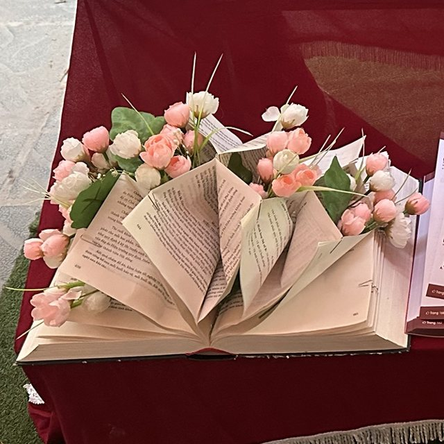
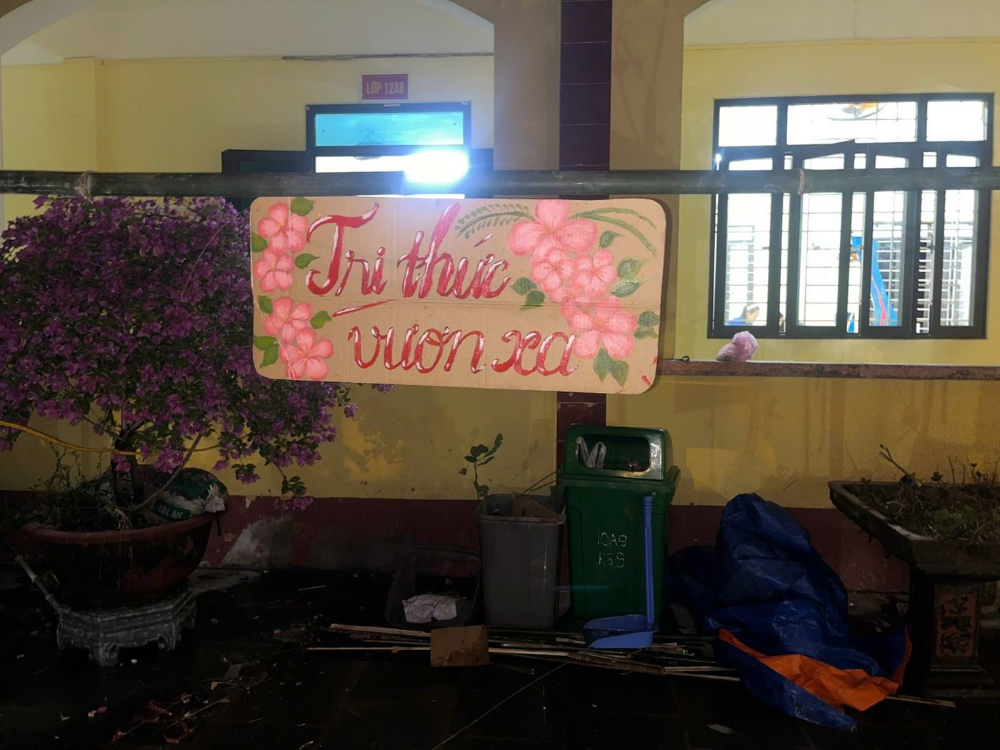
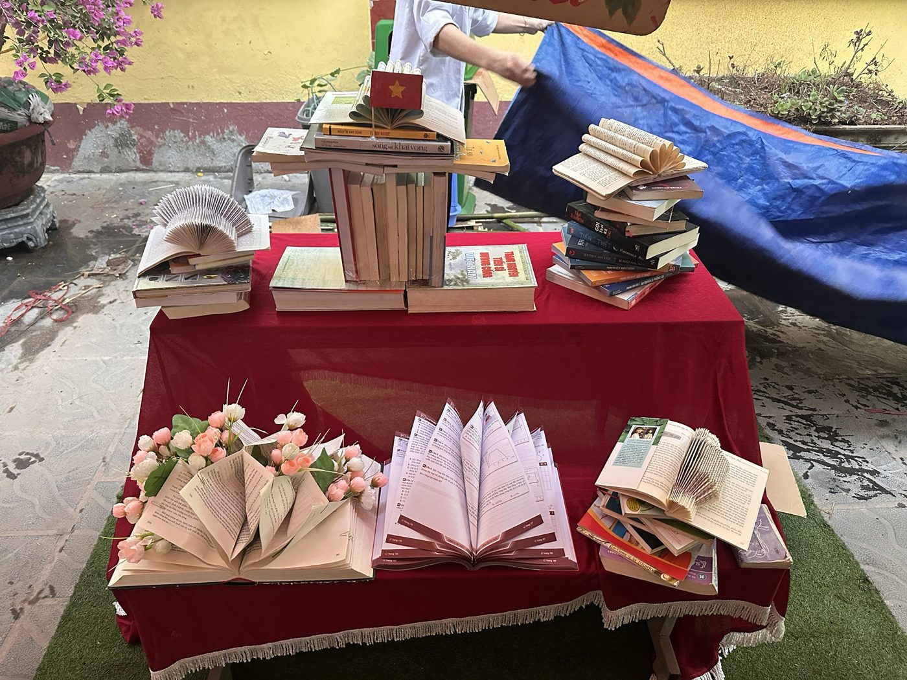
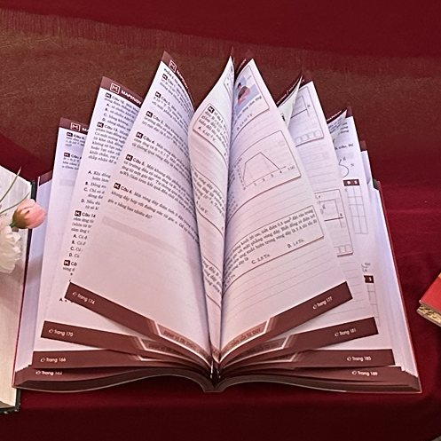
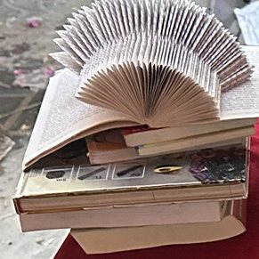
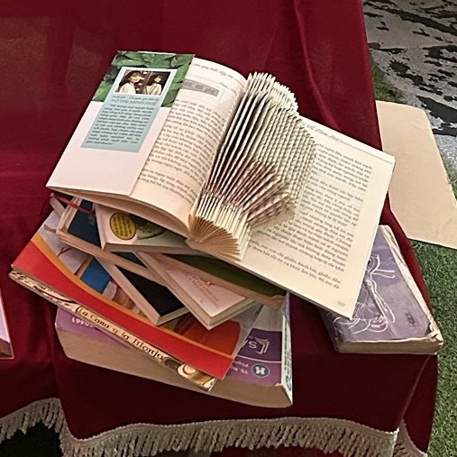
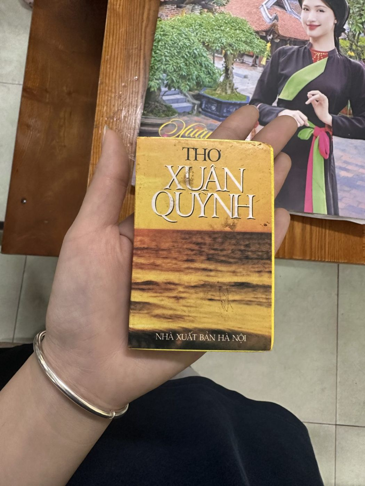

Hoa giấy sáchSách nở hoa
Từng trang sách được gấp xòe thành cánh, cài những bông hoa hồng và hoa trắng — tri thức đang đơm hoa.
Không gian 03
Hành trình của những trang sách
Được tạo nên từ những cuốn sách, mô hình sách mở và những bông hoa làm từ giấy sách.

Nếu mỗi cuốn sách là một kho tàng tri thức thì trang sách đang mở chính là cánh cửa dẫn con người đến với những chân trời mới.


Hoa giấy sáchTừng trang sách được gấp xòe thành cánh, cài những bông hoa hồng và hoa trắng — tri thức đang đơm hoa.

Sách mởCuốn sách mở rộng, các trang dựng đứng xòe ra như cánh cửa dẫn tới chân trời mới.

Gấp sáchHàng trăm trang được gấp đều tay thành hình nan quạt, đặt trên chồng sách cũ.

Gấp sáchPhần trang sách gấp lại thành khối cong đều, nổi lên giữa cuốn sách đang mở.

SáchCuốn thơ bìa vàng của Nhà xuất bản Hà Nội. Những trang thơ về tình yêu, gia đình và con trẻ đã theo bao thế hệ học trò.
Bạn có biết? Xuân Quỳnh (1942 – 1988) là một trong những nhà thơ nữ tiêu biểu của thơ ca hiện đại Việt Nam, quen thuộc với học sinh qua bài thơ “Sóng”.
Tri ân thầy cô
Hình ảnh ấy còn gợi nhắc đến công lao của các thế hệ thầy cô đã miệt mài truyền đạt kiến thức, chắp cánh ước mơ cho biết bao thế hệ học sinh trong suốt 60 năm qua.
Bởi tri thức chính là hành trang quý giá giúp mỗi người tự tin bước tới tương lai.